About the Data Model and Pivot Tutorial
This tutorial guides you through adding data into Splunk Enterprise, building simple data models from this tutorial data, and creating new pivots from the data models.
Prerequisites for this tutorial
This tutorial assumes that you have downloaded, installed, and understand how to start Splunk Enterprise. If you need instructions for installing and starting the product, see the following topics in the Search Tutorial.
- Install Splunk Enterprise on Linux, Windows, or Mac OS X
- Start Splunk Enterprise and launch Splunk Web
What's covered in this tutorial?
A breakdown of what you will find in each of the sections of this tutorial follows.
- Introduction describes the pre-requisites and system requirements for completing this tutorial. It also describes Splunk Web, which is the interface for using Splunk Enterprise and Pivot.
- Part 1: Getting data into Splunk Enterprise walks you through adding the tutorial data into Splunk Enterprise. The tutorial data, which is a sample data set composed of web server and MySQL logs for a fictional online game store, is included for download in this chapter.
- Part 2: Building a data model walks you through creating a new data model, defining the root object, editing object attributes, defining child attributes.
- Part 3: Designing a Pivot report walks you through creating and saving Pivot tables and charts.
- Part 4: Creating dashboards walks you through creating new dashboards and adding Pivots to new and existing dashboards.
Make a PDF
If you'd like a PDF version of this manual, click the red Download the Data Model and Pivot Tutorial as PDF link below the table of contents on the left side of this page.
What you need for this tutorial
Before you start this tutorial, you need to download, install, and start Splunk version 6.0+. This topic discusses the requirements you need to run Splunk on your system and what you need to know about Splunk licenses.
If you already have access to a running Splunk server instance, you can skip this chapter and start with Part 1: Getting Data into Splunk Enterprise.
System requirements
Splunk Enterprise runs on most computing platforms: Linux, UNIX, Windows, and Mac OS. For this tutorial, you need a computer or laptop that meets the specifications listed in the table.
| Platform | Minimum supported hardware capacity |
|---|---|
| Non-Windows platforms | 1x1.4 GHz CPU, 1 GB RAM |
| Windows platforms | Pentium 4 or equivalent at 2Ghz, 2GB RAM |
After you install Splunk, access it using a web browser. Splunk 6.0+ supports the latest versions of Firefox, Chrome, and Safari browsers.
This is a snapshot of the Splunk Enterprise system requirements. See the "System Requirements" topic in the Installation manual.
Download the latest version of Splunk Enterprise
Download the latest version of Splunk Enterprise from the download page on Splunk.com.
If you are not logged into Splunk.com, click the download package to go to a registration form. If you do not have a Splunk.com account, sign up for one.
This tutorial focuses on Linux, Windows, and Mac OS X. The differences between OS-specific functionality are mentioned throughout this tutorial.
- Splunk provides three install options for Linux, an RPM download for RedHat, a DEB package for Debian Linux, and a tar file installer. For this tutorial, you can use any of these installers.
- Splunk provides two Windows installers, an MSI file and a compressed zip file. For this tutorial, use the MSI file graphical installer.
- Splunk provides two Mac OS X installers, a DMG package and a tar file installer. For this tutorial, use the DMG packaged graphical installer.
Splunk licenses
Splunk licenses limit the volume of data that your Splunk installation can index in a single day. Splunk runs with either an Enterprise license or a Free license. When you download Splunk for the first time, you get an Enterprise trial license that expires after 60 days. This trial license entitles the server to 500PM per day indexing volume and all of the Enterprise features. See more about "Types of Splunk licenses" in the Admin manual.
Next steps
The next topic describes how to navigate the views in Splunk Web.
Splunk Web refers to the Splunk Enterprise graphical user interface. This topic discusses how to find the pages in Splunk Web that you need to complete this tutorial.
Finding Splunk Home
Splunk Home is your interactive portal to the apps and data accessible from this Splunk instance.

If this is a new installation of Splunk Enterprise, Splunk Home is the first page that you see when you log in. Otherwise, your account might be configured to start in another view such as Search or Pivot in the Search & Reporting app.
You can return to Splunk Home from any other view by clicking on the Splunk logo on the Splunk bar.
Use the Splunk bar
The Splunk bar is common to every page in Splunk Web. You will use it to switch between the editor views when you create data models and pivots in this tutorial.
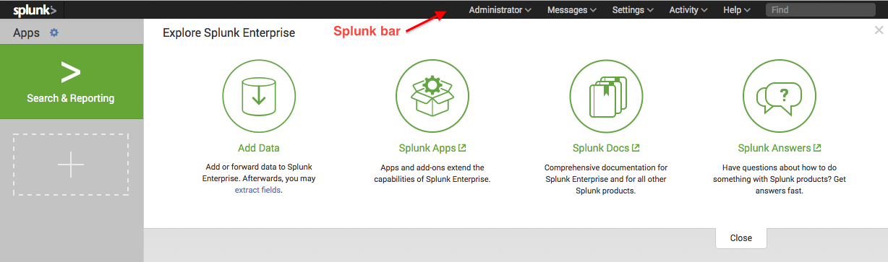
Apps
The Apps panel lists the apps that are installed on your Splunk instance that you have permission to view. Select the app from the list to open it.
For an out-of-the-box Splunk Enterprise installation, you see one App in the workspace: Search & Reporting. When you have more than one app, you can drag and drop the apps within the workspace to rearrange them.
You can do two actions on this panel:
- Click the gear icon to view and manage the apps that are installed in your Splunk instance.
- Click the plus icon to browse for more apps to install.
The Data Model and Pivot editors are part of the Search & Reporting app.
Explore Splunk Enterprise
The options in the Explore Splunk Enterprise panel help you to get started using Splunk Enterprise. Click on the icons to open the Add Data view, browse for new apps, open the Splunk Enterprise Documentation, or open Splunk Answers.
Next steps
Continue to the next topic to add the tutorial to your Splunk Enterprise instance.
Part 1: Getting data into Splunk Enterprise
Get the tutorial data into Splunk
This topic walks you through downloading the tutorial data set and adding it into Splunk Enterprise. You can complete this tutorial in several hours, but if you want to spread it out over a few days, download a new sample data file and add it.
Download the sample data file
Download and do not uncompress the tutorial data file here:
http://docs.splunk.com/images/Tutorial/tutorialdata.zip
This tutorial data file is updated daily and shows events timestamped for the previous 7 days.
Add the sample data into Splunk Enterprise
1. Log into Splunk.
If you are not in Splunk Home, click the Splunk logo on the Splunk bar to go to Splunk Home.
2. Under Explore Splunk Enterprise, click Add data.
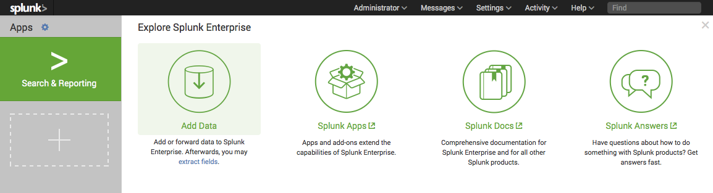
The Add Data view opens. TheAdd Data displays three options for adding data, lists of common data types, and add-ons you can use to extend Splunk Enterprise's capabilities to add data.
3. Under "How do you want to add data?", click Upload.

4. Under Select Source, click Select File to browse for the tutorial data or Drop the data file into the outlined box.
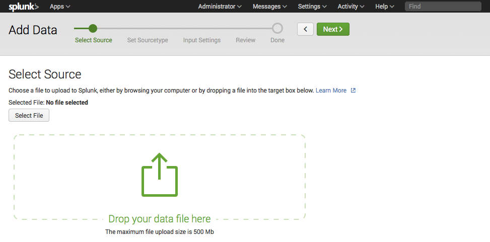
Because the tutorial data file is an archived data file, the next step in the Add Data workflow changes from Set Sourcetype to Input Settings.
5. Click Next to continue to Input Settings.
Under Input Settings, you can override the default settings for Host, Source type, and Index.
6. Modify the host settings to assign host names using the a portion of the path name:
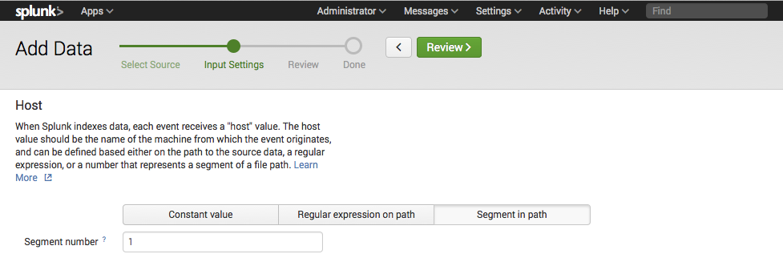
6.1. Select Segment in path from the menu.
6.2. Type in 1 for the segment number.
7. Click Next to Review your input settings.
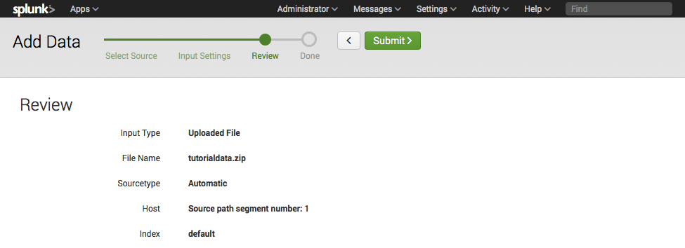
8. Click Submit.
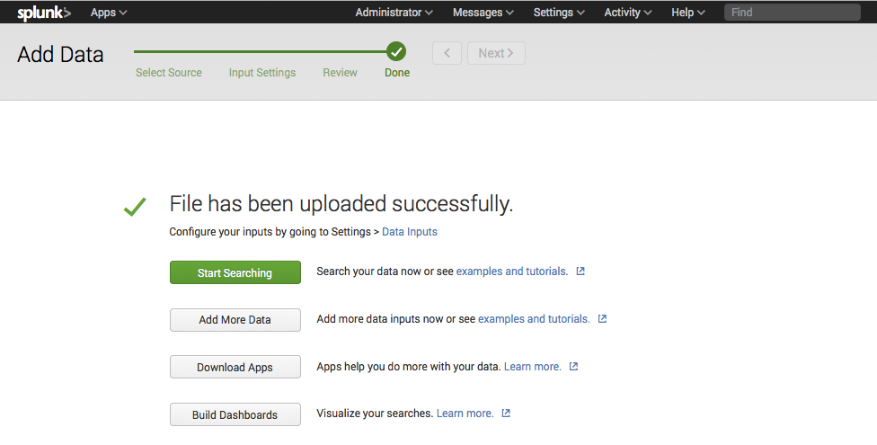
9. To confirm that the data added successfully, click Start Searching.
This opens the Search view and runs a search for the tutorial data source.

Next steps
Some of the examples in this tutorial require data from external lookup tables. Now that you have added data to Splunk, the next topic walks you through adding the lookup tables to Splunk.
Add lookup files into Splunk
The data models and pivots that you will create in this tutorial require some fields from an external lookup file. This topic walks through adding the required lookup to Splunk and creating a new lookup definition.
Field lookups let you reference fields in an external CSV file that match fields in your event data. Using this match, you can enrich your event data by adding more meaningful information and searchable fields to each event.
For more information about creating lookup definitions (as well as uploading CSV files), see "Use field lookups to add information to your events".
Download the lookup file
Download and uncompress the following file:
- http://docs.splunk.com/images/d/db/Prices.csv.zip
This file maps the productId, which exists field in the Buttercup Games tutorial data, to a product name and price.
Find the Lookups manager
1. In the Splunk bar, on the upper right, click Settings.
2. Under Knowledge, click Lookups.
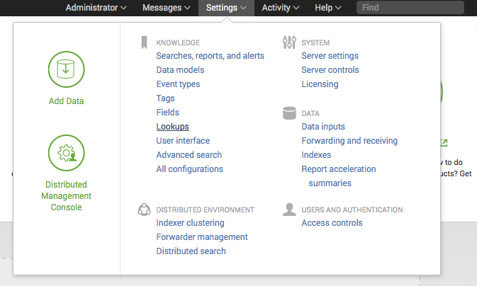
This opens the Lookups editor where you can create new lookups or edit existing ones.
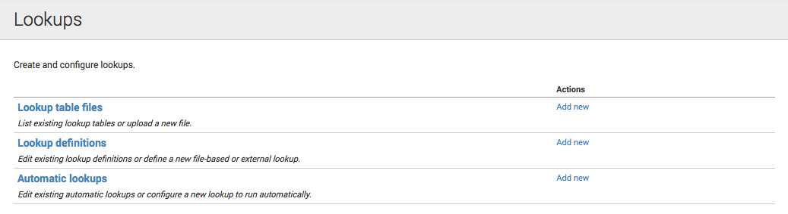
You can view and edit existing lookups by clicking on the links in the table for Lookup table files, Lookup definitions, and Automatic lookups.
Upload the lookup table file
1. In the Lookups manager under "Actions" for Lookup table files, click Add new.
This takes you to the Add new lookup table files view where you upload CSV files to use in your definitions for field lookups.

2. To save your lookup table file in the Search app, leave the Destination app as search.
3. Under Upload a lookup file, browse for the CSV file (prices.csv) to upload.
4. Under Destination filename, name the file prices.csv.
This is the name you use to refer to the file in a lookup definition.
5. Click Save.
This uploads your lookup file to the Search app and returns to the lookup table files list.

Note: If Splunk does not recognize or cannot upload the file, check that it was uncompressed before you attempt to upload it again.
If the lookup file is not shared, you can not select it when you define the lookup.
1. Go to the Lookup table files list.
2. Under Sharing for the prices.csv lookup table's Path, click Permissions.
This opens the Permission dialog box for the prices.csv lookup file.
3. Under Object should appear in, select All apps.

4. Click Save.
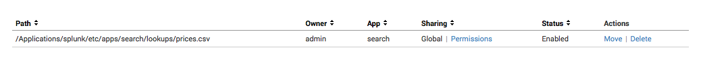
Now, the lookup table should be shared with Global permissions.
Add the field lookup definition
1. Return to the Lookups manager.
2. Under Actions for Lookup definitions, click Add New.
This takes you to the Add new lookups definitions view where you define your field lookup.
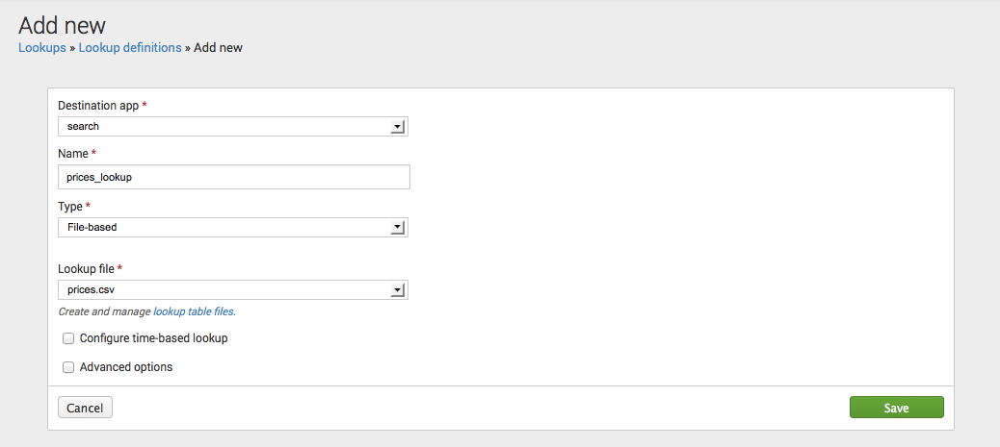
3. Leave the Destination app as search.
4. Name your lookup prices_lookup.
5. Under Type, select File-based.
File-based lookups add fields from a static table, usually a CSV file.
6. Under Lookup file, select prices.csv (the name of your lookup table).
7. Leave Configure time-based lookup and Advanced options unselected.
8. Click Save.
This defines prices_lookup as a file-based lookup.

1. Return to the Lookup definitions list.
2. Under Sharing for prices_lookup, click Permissions.
The Permission dialog box for the prices.lookup opens.
3. Under Object should appear in, select All apps.

4. Click Save.
Now, prices_lookup should be shared with Global permissions.
Next steps
Continue to the next section to learn about data models and create them.
Part 2: Building a data model
About data models and data model objects
The topics in this chapter show you how to use the Data Model Builder to design and build data models for the tutorial data.
What is a data model?
A data model is a hierarchically-structured search-time mapping of semantic knowledge about one or more datasets. It encodes the domain knowledge necessary to build a variety of specialized searches of those datasets. Briefly put, data models generate searches. These specialized searches are in turn used by Splunk to generate reports for Pivot users.
To create an effective data model, you must understand your data sources (whether it's derived from a log file, TCP/UDP network input, received from a scripted input for an API, and so on) and your data semantics (how the various fields in your data are extracted, related, and organized). This information can affect your data model architecture.
Data models can get their fields from extractions that you have previously set up via Settings or direct edits to props.conf and transforms.conf. But when you define your data model, you can also arrange to have it get additional fields at search time through regex-based field extractions, lookups, and eval expressions.
In this tutorial, your data sources are web access and secure log files. Most of the fields are automatically extracted. Other fields will be added using lookup files and calculated with eval expressions.
About data model objects
Data models are composed of one or more objects. Each object is a dataset that corresponds in some manner to a set of data in your index. Objects break down into four types: Events objects, search objects, transaction objects, and child objects.
Objects in data models can be arranged in parent/child relationships. Each top-level or root object can have child objects which inherit the constraints and attributes of the parent and have additional constraints and attributes of their own.
Note: Data model objects are a category of knowledge object. However, data model objects often use other knowledge objects such as extracted fields, calculated fields, and lookups to define the specfic sets of data that they represent.
Object constraints
All data model objects are defined by sets of constraints that filter out events that aren't relevant to the object; they help to define the dataset that the object represents. A typical constraint looks like the first part of a search, before pipes and additional search commands are added.
Constraints are inherited by child objects to ensure that each child object represents a subset of the data represented by its parent objects. Pivot users can then use these child objects to design reports with datasets that already have extraneous data prefiltered out.
Object attributes
An object's attributes are a set of fields associated with the dataset that the object represents. Object attributes come in five flavors: Auto-extracted, Eval expression, Lookup, Regular Expression, and Geo IP.
Object attributes are inherited. A child object will automatically have all of the attributes that belong to its parent. You can design a relatively simple data model where all of the necessary attributes for a specific object tree are defined in its root object, and the child objects would be differentiated from the root object and from each other only by their constraints.
Attributes serve several purposes. Their most obvious function is to provide the set of fields that Pivot users work with to define and generate a pivot report; the set of fields they have access to is determined by the object they choose when they enter Pivot. You might add attributes to a child object to provide fields to Pivot users that are specific to the dataset covered by that object.
Learn more about data models
The information discussed in this topic is limited to what you need to know to build the data models for the tutorial data. For more information, see "About data models" and "Design data model objects" in the Knowledge Manager manual.
Next steps
Proceed to the next topic, where you will create a new data model.
Create a new data model
This topic shows you how to create new data models based on the tutorial data. Data models are created within Pivot and you need to have admin or power role to create a data model.
Enable roles to create a data model
By default only users with the admin or power role can create data models. For other users, the ability to create a data model is tied to whether their roles have "write" access to an app. Since this is a first time install, you have admin privileges by default and should be able to continue.
If you are not able to create or edit a data model, you may need to check your permissions. For more information, read "About data model permissions" in the Knowledge Manager Manual.
1. In the Splunk bar, click Settings.
2. Under Knowledge, click Data Models.
This takes you to the Data Models management page. The Data Models management page is a listing page of data models. If you have existing data models in this Splunk Enterprise instance, this page lists them. Use this page to manage the permissions, acceleration, cloning, and removal of existing data models. You can also use this page to upload a data model or create new data models, using the Upload Data Model and New Data Model buttons on the top right.
Create a new data model
1. In the Data Models management page, click New Data Model.
This opens the New Data Model dialog box.
2. Enter the Title, "Buttercup Games"
The Title field accepts any character, as well as spaces. The value you enter here is what appears on the data model listing pages.
3. (Optional) Enter the ID, "Tutorial"
If you don't change the ID, it automatically reads "Buttercup_Games".
The ID must be a unique identifier for the data model. It cannot contain spaces or any characters that aren't alphanumeric, underscores, or hyphens (a-z, A-Z, 0-9, _, or -). Spaces between characters are also not allowed. Once you define the data model ID, you can't change it.
4. Next to App, select "Search & Reporting" from the menu.
5. (Optional) Enter the Description, "Enables data analysis and reporting for tutorial data."
6. Click Create.
This opens the Buttercup Games Edit Objects page.
Use this page to create objects for the new data model, define their constraints and attributes, arrange the objects in logical hierarchies, and manage them.
Next steps
Continue to the next topic to add a root object to the Buttercup Games data model.
Define a root object for the data model
In the last topic, you created the data model "Buttercup Games".
This topic walks you through adding a root object for Buttercup Games purchases.
Edit data model objects
1. From the Data Models list, click Buttercup Games.
This opens the Buttercup Games object editor view.
Use the Edit Objects page to design a new data model or redesign an existing data model. On the Edit Objects page, you can create objects for your data model, define their constraints and attributes, arrange them in logical object hierarchies, and maintain them.
Add a root object
Data models are typically composed of object hierarchies built on root event objects. Each root event object represents a set of data that is defined by a constraint, which is a simple search that filters out events that are not relevant to the object.
Let's create an object to track purchase requests on the Buttercup Games website.
1. To define the data model's first event base object, click Add Object.
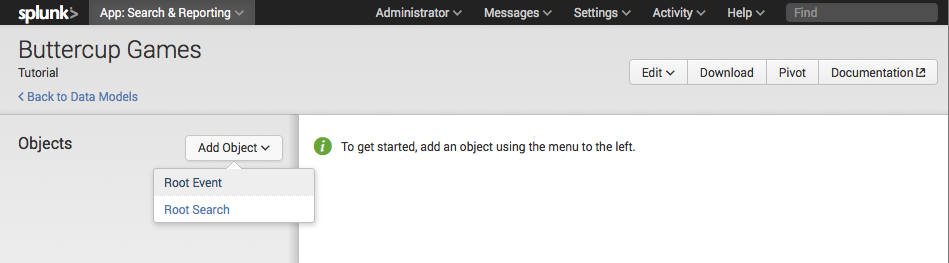
Your first root object can be either a Root event or Root search.
2. Select Root event.
This takes you to the Add Event Object editor.
3. Enter the Object Name: Purchase Requests
The Object Name field can accept any character, as well as spaces. It's what you'll see on the Choose an Object page and other places where data model objects are listed.
4. Enter the Object ID: Purchase_Requests
This should automatically populate when you type in the Object Name. You can edit it if you want to change it.
The Object ID must be a unique identifier for the object. It cannot contain spaces or any characters that aren't alphanumeric, underscores, or hyphens (a-z, A-Z, 0-9, _, or -). Spaces between characters are also not allowed. Once you save the Object ID value, you can't edit it.
5. Enter the following search Constraints: sourcetype=access_* action=purchase
This defines the web access page requests that are purchase events.
After you provide Constraints for the event base object you can click Preview to test whether the constraints you've supplied return the kinds of events you want.
6. Click Save.
The list of attributes for the root object include: host, source, sourcetype, and _time. If you want to add child objects to client and server errors, you need to edit the attributes list to include additional attributes.
Next steps
Continue to the next topic to add more attributes to Purchase Requests.
Edit attributes list
Add automatically extracted attributes
1. In the Buttercup Games object editor, click Add Attribute.
2. Select Auto-Extracted.
- The Add Auto-Extracted Field window opens.
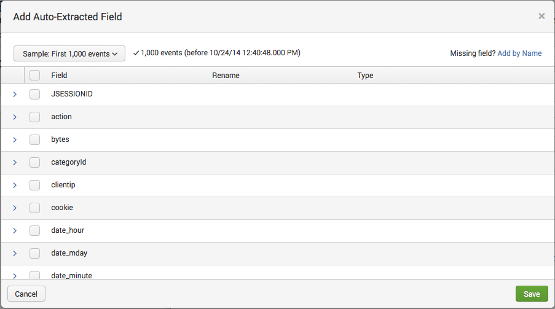
- The Auto-extract attribute type is an extracted field that Splunk Enterprise recognizes automatically (such as a default or indexed field) or a search-time field extraction that you have defined in Settings or configured in
props.confandtransforms.conf.
3. Scroll through the list of automatically extracted fields and check the action, categoryId, productId, and status fields.

- For the field
status, under Type, make sure the data type is Number and you can leave it as Optional.
- Object attributes can be Required, Optional, Hidden, or Hidden & Required.
- Optional means that the attribute doesn't have to appear in every event represented by the object. The attribute may appear in some of the object events and not others.
4. Click Save.
Add lookup attributes from lookup tables
Creating a lookup attribute requires at least one lookup definition defined in the Lookups manager. The lookup definition tells Splunk where the lookup table is and how to connect to it. Once the lookup definition is in place, Splunk can match the values of the attribute you choose to values of a field in the lookup table and then return corresponding field/value combinations and apply them to your object as lookup attributes.
Note: The field lookup has to be uploaded and defined prior to editing this data model object. You should have already added the prices.csv lookup table and defined the price_lookup. If not, return to the earlier topic and do so, before you continue.
Also, lookup attributes are added from lookup definitions that are not automatic. If you define an automatic lookup, then the fields will already be added to the events. In this case, they can be added as Auto-Extracted attributes.
1. Return to the the Buttercup Games object editor for the Purchase Requests object.
2. Click Add Attribute and select Lookup.
- This opens the Add Attributes with a Lookup page.
3. For Lookup Table, select prices_lookup.
- The prices_lookup file has descriptive product names and prices for each of the items sold on the Buttercup Games website. You need to configure a lookup attribute to add those fields to the Purchase Requests objects. The csv lookup table has header values that look like this:
productId,product_name,price,sale_price,Code
DB-SG-G01,Mediocre Kingdoms,24.99,19.99,A
4. Under Input, select productId for the Field in lookup and Attribute.
- The Field in Lookup is the name of the field used in the csv lookup table. The Attribute is the name of the field used in the event data. For this lookup, the fields have the same name.
5. Under Output, select the product_name and price fields.
- The output fields read from the header row of the lookup table are listed under Field Names. You can type in a Display Name for each fields. This display name is the name used for the field in your events.
- Because productId is the field used to match between the events and lookup table, you cannot change its display name.
6. For product_name, enter the Display Name "productName". For price, enter the Display Name "price" and ensure that the Type is set to Number.
7. Click Preview to review the fields you want to add.
- Use the tabs to view the Events in a table, or view the values of each of the fields you selected in Output. For example, the screenshot shows the values of productName.
8. Click Save.
Next steps
Now, that you've created the root object and added the required attributes, you can add child objects.
Define child objects
A child object inherits all of the constraints and attributes that belong to its parent object. When you define a new child object, you give it one or more additional constraints, to further focus the dataset that the object represents.
In the previous topic, you added a root object called "Purchase Requests" to track purchases on the Buttercup Games website. This topic takes you through steps to add child objects for tracking successful and failed purchases.
Add a child object
1. In the Buttercup Games object editor page, click Add Object and select Child.
This opens an editor window, Add Child Object.
2. Enter the Object Name: Successful Purchases
3. Enter the Object ID: Successful_Purchases
4. Under, Inherit From, select Purchase Requests.
This means that this child object will inherit all the attributes from the parent object, Purchase Requests.
5. Enter Additional Constraints: status=200
This means that the search for the events in this object, when expanded will look something like this:
sourcetype=access_* action=purchase status=200
6. Click Save.
Add a second child object
Follow steps 1-6 to add another child object named "Failed Purchases", which has the additional constraint to define the status codes for failed purchases.
Failed purchases can be all status codes that are not successful, status!=200, or just the client and server error codes, status=40* OR status=50*.
This child object should also Inherit From the Purchase Requests root object.

Next steps
Now that you've created data models, you can generate pivot reports. Continue to the next chapter to learn about Pivot and how to create pivot reports.
Part 3: Designing a Pivot report
About Pivot
The Splunk Enterprise Pivot tool lets you quickly design reports with tables and data visualizations that present different aspects of a selected Data Model. Pivot lets you generate these reports with a UI interface instead of having to use the search processing language.
Pivot views
Pivot is part of the Search & Reporting app.
1. On the Search & Reporting app's navigation bar, click Pivot.
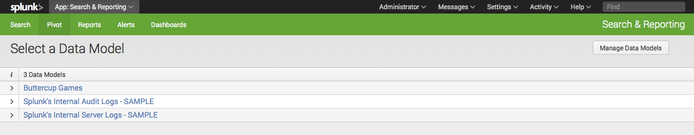
Entering Pivot takes you to the Select a Data Model page, where you should see a list of the data models if any have been created. For example, this list includes the Buttercup Games data model that you created earlier in this tutorial. It also includes two sample data models that track Splunk Enterprise internal and audit logs.
If you view Pivot in smaller browser windows, the Search & Reporting app's navigation bar is hidden. To use the navigation bar, click the menu icon on the upper right. The navigation bar slides down.
2. Use the arrows under the i column to view information for Buttercup Games.
Clicking Edit objects takes you to the object editor for the Buttercup Games data model.
3. Click Buttercup Games.
This takes you to the Select a Data Object view. This view lists all the objects that have been created for this data model. The Buttercup Games data model consists of the Purchase Requests parent object and the Successful Purchases and Failed Purchases child objects.
4. Use the arrows under the i column to view the information for the objects.
5. Click Purchase Requests.
Selecting an object from the Select a Data Object view takes you to the New Pivot editor for that data model.
Components of Pivot
The following illustrates the Pivot editor components.
Visualization types: The left-hand vertical bar contains icons that represent different visualization types. Selecting a different icon controls which Pivot builder and report interfaces display. Visualization types are: Statistics Table (default), Column Chart, Bar Chart, Scatter Chart, Bubble Chart, Area Chart, Line Chart, Pie Chart, Single Value Display, Radial Gauge, Marker Gauge, and Filler Gauge.
Document Actions: The upper horizontal bar displays document-related actions. These actions include:
- Save as...: Save the current report as a new one (Report) or as a dashboard panel (Dashboard Panel).
- Clear: Reset the interface to its initial state, which will dismiss the saved report (if applicable), change the visualization type to Statistics Table, and populate the report with a single Column Value for the count of the object and a time filter for all time (if _time is an applicable field).
- Data model object: This is the right-most button. It takes its label from the data model object that was selected. For example, in the screenshot it is "Purchase Requests". Use this menu to navigate back to the list of data models (Select another Data Model), navigate back to the list of data model objects (Select another Object), or edit the selected data model object (Edit Object). Additionally, you can rebuild acceleration and inspect the acceleration job.
Job Actions: The Pause and Stop buttons control the progress of the Pivot job. Other actions include: Share, Export, Print, and Open in Search. Clicking Open in Search opens the Search view and runs the current search string.
Learn more
The topic briefly described what you need to know to access the pivot interface and build Pivots in the rest of this chapter. Read the Pivot Manual for more information.
Next steps
Continue to the next topic, where you will use Pivot to build a report from the Buttercup Games data models you created in a previous chapter.
Create and save a Pivot
This topic shows you how to use pivot to create and save a simple report. This example uses the data model objects that you created in the previous chapter. If you do not have them, refer to "Create a new data model".
This is a very simple example. More complicated examples are shown in later topics of this tutorial.
Create a new Pivot
When you set out to design a report, you first need to select a data model that represents the broad category of event data that you want to work with. For this tutorial, that data model is the "Buttercup Games".
1. From the app navigation bar, select Pivot to enter the Select a Data Model page.
2. In the data models list, click Buttercup Games.
This takes you to the Select an Object page.
The Buttercup Games data model has a root object to track Purchase Requests from the game website. The Purchases object breaks down into Successful and Failed purchases.
3. Select "Purchase Requests".
This opens a New Pivot editor for the Purchase Requests object.
By default, the Pivot Editor interface displays elements to define a pivot table. There are four basic pivot element categories: Filters, Split Rows, Split Columns, and Column Values. When you first open the Pivot Editor for a specific object, only two elements will be defined:
- A time range Filter element (set to All time).
- A Column Values element (set to "Count of <object_name>".
This gives you the single value, which is the total count of events returned by the object over all time. In this case, this count is the "Count of Purchase Requests".
4. Select the Single Value Display element from the visualization bar.
4.a Next to Under Label, type Purchase Requests.
- By default, the time range filter element is set to All time.
- Single value visualizations (single value, the three gauge types) use the first column value element to get their single value. Here, the field is "Count of Purchase Requests".
- Single value visualizations do not use Split Row or Split Column elements.
Save the Pivot as a report
After you define a pivot, you can save it as either a report or a dashboard panel. In this example, you save the single value display as a report. Dashboards and dashboard panels are discussed in a later chapter.
1. Click Save As... and select Report.
The Save as Report dialog box opens.
2. Enter a Title "Total Purchase Requests" and Description (optional).
3. Select Yes to include the time range picker. (This should be the default.)
4. Click Save.
After the report saves, a window displays that "Your report has been created". You can continue editing the current Pivot, add the pivot to a dashboard, change additional settings for the saved report, or view the report.
5. Click View to view the report.
View saved reports
A report that is created from Pivot will always be saved under the current app and owner namespace.
1. Click Reports in the app navigation bar to view the list of all saved reports.
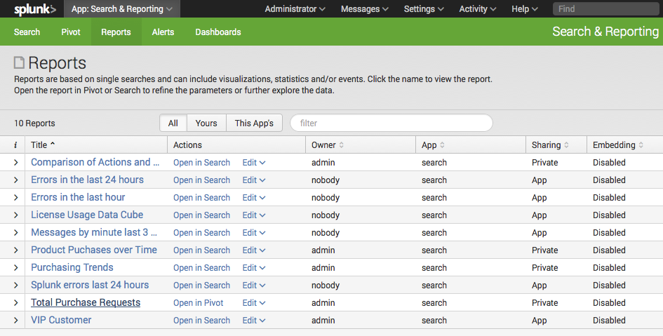
2. Use the arrow in the i column to view information about Total Purchase Requests report.
3. Click the report name to view the report.
Next steps
In this topic, you created and saved a report using Pivot. Continue to the next topic to create more pivot visualizations.
Create a pivot table
In the previous topic you used pivot to find the total number of purchase requests and saved the single value display as a report. In this topic, you will use the pivot visualization editor to create a pivot table of the Buttercup Games Successful Purchases object.
The Successful Purchases object has attributes for the products purchased from the Buttercup Games website. This includes the automatically extracted attributes (categoryId and productId) as well as the lookup attributes (price and product_name).
The Buttercup Games online store offers hundreds of products, of a variety of categories, and you want to know more about the items that were purchased over the past week. You can create a pivot report that breaks down the total number of purchase events by product name, and through that quickly see which of your products were the top sellers for that period.
Define a new Pivot
1. From the app navigation bar, select Pivot to enter the "Select a Data Model" page.
2. Choose the Buttercup Games data model and select the Successful Purchases child object.
The New Pivot editor for Successful Purchases opens.
Add pivot elements
You can add multiple elements from each pivot element category to define your pivot table. It's easy to add, define, and remove pivot elements in the process of determining what information your table should provide.
- To add a pivot element: Click the + icon. This opens up the element dialog, where you choose an attribute and then define how the element uses that attribute.
- To inspect or edit an element: Click the "pencil" icon on the element. This opens the element dialog.
- To reorder and transfer pivot elements: Drag and drop an element within its pivot element category to reorder it. Drag and drop elements between element categories to transfer them.
- To remove pivot elements from the Pivot Editor: Open its element dialog and click the Remove button, or drag the element up or down until it turns red and drop it.
Under Filters, the time filter is always present when you build a pivot; you cannot remove it. It defines the time range for which the pivot returns results. It operates exactly like the time range menu that is in use throughout Splunk Web. For more information, see "Select time ranges to apply to your search" in the Search Manual.
Change the time range filter
Currently your Pivot table shows a single value, the total count of Successful Purchases over All time.
Change the time filter to view the Successful Purchases over a different time range:
1. Under Filter, click the pencil next to All time to open the time range picker.
2. Under Presets and Relative, click "Last 7 days".
(If this shows no events, you can select "All time" and continue.)
Add a Split Row element
Add Pivot elements to see the Count of Successful Purchases for each product by name:
1. Under Split Rows, click + and select productName, the lookup field that contains the name of each product, based on the productId.
This opens a dialog box that lets you format the field.
2. Rename the field, Product Name and Click Add To Table.
Add a Column Value element
Add a Column Value to see total earned for each product that was successfully purchased:
1. Under Column Values, click + and select price.
2. In the dialog box, format the field:

2.a Enter the label Total Revenue.
2.b Select the Value Sum.
This creates a field called Total Revenue, which is the summation of the price for each successful purchase of the product. (You can add the price values as another Split Row, if you want to see the cost of each individual product in this table.)
3. Click Add To Table.
Save the Pivot table
Save the Pivot table as a report named Purchases by Product.
1. Click Save as and select Report.
2. In the Save as Report dialog box:
2.a Enter the Title "Purchases by Product".
2.b (Optional) Add the Description "Table of Product Purchases".
2.c Include a Time Range Picker.
3. Click Save.
4. In the Your Report Has Been Created dialog box, click View.
Next steps
Continue to the next topic to create some simple pivot visualizations.
Create a pivot chart
In the previous topic you used Pivot visualization editor to build a table. In this topic, you will use the same object to create chart visualizations.
Define a new Pivot
1. From the app navigation bar, select Pivot to enter the "Select a Data Model" page.
2. Choose the Buttercup Games data model and select the Successful Purchases child object.
The New Pivot editor for Successful Purchases opens.
Visualization types are listed in the black sidebar that runs down the left-hand side of the Pivot editor. By default, the statistics table visualization is selected when you enter Pivot.
It can be helpful to begin building your pivot as a table and then switch over to the visualization of your choice. When you switch between pivot visualization types, Pivot will find the elements it needs to create the visualization, discard the elements it does not need, and notify you when needed elements need to be defined. This happens when you switch between tables and charts as well as between chart types.
Add Pivot elements
In the last topic, we looked at purchases by product ID and name. Now, let's report on the count of successful purchases by category.
Add a Split Row for the categoryId field.
1. Under Split Rows, click + and select categoryId from the list.
2. Enter the label Category and click Add to table.
This returns the following Pivot table.
Change the visualization type
1. Click the Column Chart icon from the visualization bar.
The New Pivot editor for the Column chart displays.
- Column charts use the first split row element in pivot table definitions to provide their X-axis values. In this case, that Split Row is Category.
- Column charts use the first column value element in pivot table definitions to provide their Y-axis values. Here, that Column Value is Count of Successful Purchases.
This data can also be visualized as a pie chart.
2. Click the Pie Chart icon from the visualization bar:
The New Pivot editor for the Column chart displays.
- Pie charts use the values from the first Split Row element (Category) to determine the number and colors of their slices.
- Pie charts use the first Column Value element (Count of Successful Purchases) to determine the relative sizes of their slices.
Mouseover a slice of the pie chart to view the metrics: Category, Count of Successful Purchases, and percentage of the total Count of Successful Purchases.
Next steps
In this chapter you created three pivots and saved two of them as reports. This last pivot chart, you will save as a dashboard panel. Continue to the next chapter to read about dashboards.
Part 4: Creating a dashboard
About dashboards
Splunk Enterprise makes it easy to interactively build and edit dashboards without writing a single line of XML code.
- Add a pivot you have just created to a new or existing dashboard: You can jump right into dashboard creation after creating a pivot visualization you like with the Create Dashboard Panel feature. It guides you through the process of creating a dashboard panel based on the search and adding it to a new or preexisting dashboard. When you finish, you are still in the Pivot view.
- Use the Dashboard Editor to create dashboards and populate them with dashboard panels: You can also use the Dashboard Editor to edit existing dashboards. This method of dashboard creation is useful if you have a set of pivot reports that you want to quickly base a set of dashboard panels upon.
Change dashboard permissions
You can specify access to a dashboard from the Dashboard Editor. However, your user role (and capabilities defined for that role) may limit the type of access you can define.
If your user role is admin (with the default set of capabilities), then you can create dashboards that are private, visible in a specific app, or visible in all apps. You can also provide access to other user roles, such as user, admin, and other roles with specific capabilities.
For additional information on setting up permissions for dashboards and other knowledge objects refer to "Manage knowledge object permissions" in the Admin Manual.
Change dashboard panel visualizations
After you create a panel with the Dashboard Editor, use the Visualization Editor to change the visualization type displayed in the panel, and to determine how that visualization displays and behaves. The Visualization Editor only allows you to choose from visualization types that have their data structure requirements matched by the search that has been specified for the panel.
- For an overview of the various visualization types and their formatting/display options, see the "Visualization reference" topic in the Dashboards and Visualizations manual.
- For more information about the data structures required by the visualization types see "Data structure requirements for visualizations" in the Dashboards and Visualizations manual.
Edit the XML configuration of a dashboard
Although you are not required to use XML to build dashboards, you can edit a dashboard's panels by editing the XML configuration for the dashboard. This provides editing access to features that are not available from the Dashboard Editor. For example, edit the XML configuration to change the name of dashboard or specify a custom number of rows in a table.
For more information about editing XML for dashboards created with the Dashboard Editor, see "Dashboard examples" in the Dashboards and Visualizations manual.
Add pivots to dashboard
This topic continues where you left off in Part 3: Designing a Pivot Report. The last pivot you created was a pie chart. If you haven't created that chart, you can return to the previous topic and do so. Now, you will save that visualization to a new dashboard panel and then add all previous pivot reports to the same dashboard.
Save a Pivot as a dashboard panel
You just created a pie chart, now let's save it to a dashboard panel.
1. Click Save as and select Dashboard panel.
This opens the Save as Dashboard Panel dialogue.
2. Define a new dashboard to save the panel to:
- For Dashboard, click New.
- Enter the Dashboard Title: Buttercup Games. The Dashboard ID will update with Buttercup_games.
- (Optional) Add a Dashboard Description: Reports on Buttercup Games online shop data.
3. Define the dashboard panel:
- Enter the Panel Title: Successful Purchases by Category
- Leave the Panel Powered BY as Inline search.
4. Click Save.
The dashboard was successfully created.
5. To continue, click View Dashboard.
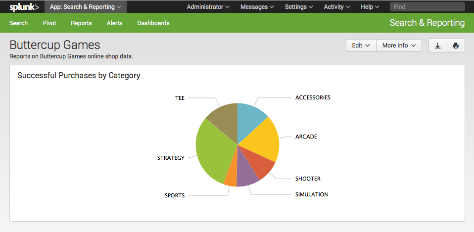
View and edit dashboard panels
After you save a dashboard, you can access it by clicking Dashboards in the app navigation bar.
1. Click Dashboards in the app navigation bar.
This takes you to the Dashboards listing page.

You can Create a new dashboard and edit existing dashboards. You see the Buttercup Games dashboard you just created.
2. Under the i column, click the arrow next to Buttercup Games to see more information about the dashboard: What app context it is in, whether or not it is scheduled, and its permissions.
There are also quick links to edit the dashboard's Schedule and Permissions inline with the information.
To view the dashboard, click the dashboard's Title or select the Edit option under Actions.
Note: If you click to view a dashboard and you cannot view it (or it displays blank), check that you have read access to the data model. To do this, go to the Manage Data Models view and edit the Permissions for the Buttercup Games data model to share in the App.
Add an input to the dashboard
1. In the Dashboards list, click Buttercup Games to return to that dashboard.
2. Click Edit and select Edit Panels.
The Edit: Buttercup Games view opens.
In this view, you have edit buttons: Add Input, Add Panel, and Edit Source.
3. Click Add Input and select Time.
This adds a shared time range picker input to the dashboard editor.

4. Click the Edit Input icon for the time range picker. It looks like a pencil.
This opens a set of input controls. The Time input type should be preselected.
5. Change the Token value to Buttercup_Games_Time_Range and click Apply.
This optional step redefines the name of the input token for the time range picker. Because the default names of input tokens are not very descriptive (field1, field2, field3, and so on), you may want to do this when you give your dashboard multiple inputs. It makes it easier to understand which input you are working with.
You can also optionally change the default time range for the picker by changing the value of Default. Right now it defaults to All time.
In the next two steps you connect your dashboard panel to this time range picker.
6. In the new dashboard panel, click the Inline Pivot icon and select Edit Search String.
The Edit Search dialog opens.
7. Click Time Range Scope and select Shared Time Picker (Buttercup_Games_Time_Range).
8. Click Save.
The panel is now hooked up to the shared time range picker input. The inline search that powers the panel now uses the time range selected for the shared time range picker.
As you add panels to this dashboard, repeat steps 6 through 8 to hook the new panels up to the shared time range picker input.
You can have dashboards that offer a mix of panels that work with the shared time range picker and panels that show data for fixed time ranges.
9. Click Done to save your changes to the dashboard.
Add saved reports to the dashboard
Add another panel using one of the saved reports you created earlier.
1. In the Buttercup Games dashboard, click Edit and select Edit Panels.
2. In the Edit: Buttercup Games view, click Add Panel.

The Add Panel sidebar menu slides open.
3. To add a new panel from a report, click New from Report.

4. Click Total Purchase Requests.
This slides open a preview panel with information about the saved report.
4.a Click Add to Dashboard.
The new panel is placed in the dashboard editor. You can click anywhere to close the Add Panel sidebar menu or choose another report to add to the dashboard.
Before you close the Add Panel sidebar menu, add a second report.
5. Click Purchases by Product.

5.a Click Add to Dashboard.
6. Close the sidebar menu.
While in the dashboard editor view, drag and drop the panels to rearrange them on the dashboard.
Note: If you want the new panels to work with the shared time range picker input, repeat steps 6 through 8 from the "Add an input to the dashboard" procedure to connect them to that input.
7. Click Done.
Your dashboard should look like this:
Next steps
This completes the Data Model and Pivot Tutorial. Continue to the next chapter to read about what you can do next.
Next steps
More Data model and Pivot resources
This tutorial was a brief introduction to building data models and then using them to create pivot visualizations and reports. For more details, refer to the following manuals.
- Knowledge Manager Manual: Contains a section that shows you how to design and build data models using the Data Model Editor.
- Pivot Manual: Explains how to use the Pivot Editor to generate tables, charts, and other visualizations of your event data.
We encourage you to investigate the tutorial data, run more searches, and create more dashboards!
To learn more about the Splunk Search Processing Language, see the Search Tutorial.
To learn more about Splunk Enterprise features and how to use them, see the selection of Education videos and classes.